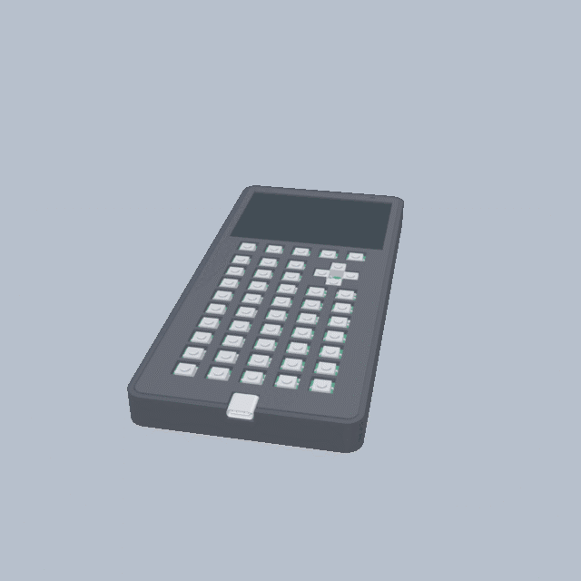

OpenCalc
ESP32-S3 graphing calculator — in progress
I’m designing the PCB, enclosure, firmware, and interface for an open-source graphing calculator. It has graphing, CAS, Python-style scripting, games, USB-C, and a color display.
Computer Engineering student at Drexel University.
I'm Cory Pearl - I build software, firmware, and PCBs, driven by curiosity about how things work.

A few things I’ve designed, programmed, and tested.
I’m designing the PCB, enclosure, firmware, and interface for an open-source graphing calculator. It has graphing, CAS, Python-style scripting, games, USB-C, and a color display.
My team built a mobile prototype that turns a photo or voice description into a categorized, geotagged 311 report. It also supports multiple languages and shows nearby reports on a map.
Most of my projects start with “I wonder if I could build that.”
I’m a Computer Engineering student at Drexel University. I’m interested in software engineering, embedded systems, FPGA design, and electronics.
I like carrying a project all the way from the first sketch to hardware design, programming, prototyping, and testing. Right now most of that time is going into OpenCalc.